AlignPro finds the mounting angles of the Lidar on the Canadian Lidar mobile mapper (roll, pitch and heading) from a short calibration drive, the patch test. It hands the result to CloudPro, the next stage of the processing chain, and gives you the three angles in the mapper's own convention so you can enter them in the mapper. This guide is for AlignPro {VERSION}.
Each Lidar point is turned into a map coordinate with the trajectory (the vehicle's position and attitude), the lever arm (where the Lidar sits relative to the Certus reference point, measured with a tape or total station) and the mounting angles (how the Lidar is turned relative to the vehicle). The angles cannot be measured to the hundredth of a degree a point cloud needs: an error of 0.1° moves a point 10 m away by about 1.7 cm, in different directions on passes driven in opposite directions.
A patch test drives past the same solid surfaces (walls, building corners, poles, open ground) several times, in opposite directions and at different distances. With the wrong angles the passes do not agree: a wall seen from both sides of the road appears twice, a little apart. AlignPro finds small flat patches that two or more passes see, and solves the three angles that bring the points of every pass onto the same planes (a point-to-plane adjustment). This correction to the recorded mounting is the boresight. With three or more passes it also solves with each pass left out in turn; the spread of those answers is the SDEV of each angle.
AlignPro is stage 02 of the Data Collection Systems (DCS) chain. It reads the captures (.clraw) and PosPro's trajectory, and finalizes alignment.json for CloudPro when you apply values; calibrating alone finalizes nothing (Chapter Finalizing).
| Version | Changes |
|---|---|
| 1.8.0 | From the point cloud: what CloudPro's line separation check says about the calibration, per line pair, on the Pairs page, and Use these lines and their overlap to calibrate on that material (From the point cloud). Needs CloudPro 2.2.1 for the findings. |
| 1.7.0 | The new DCS header: the chain and AlignPro's phases (Prepare › Calibrate › Report) as breadcrumbs, with the guidance in their tooltips instead of a sentence under the page. The window and the Data View are always windows of their own (no docking); Open the Data View and Reset window are in the project menu. Publish is now Finalize. Needs DCS Core 1.11.0. |
| 1.6.2 | Packets recorded while the vehicle is slower than the minimum pass speed (Settings, Passes and pairs) are left out while reading, so parking and waiting no longer use up the point budget of a line; the moving passes get those points instead. Lines are read again once. |
| 1.6.1 | Point density on the Calibration page (section Point density): Standard, Dense (now the default for new projects), Very dense or Custom, with an estimate of the memory it needs on this PC; a density that would not fit is refused. Fixes: Apply or a system profile during the full-density read waits for it instead of half-applying; opening a project while a job runs waits for it; STOP no longer shows as an error or saves a partial calibration; holes longer than 1 s in the trajectory are no longer bridged (their points are left out); the Data View places only the points it shows (faster nudges, less memory); drawing tools give the previous map tool back. Needs DCS Core 1.8.0. |
| 1.6.0 | System profiles. System profile… on the Installation page (and Save to system profile… on the Calibration page) keeps the applied Lidar lever arm, mounting angles and latency as the profile of the mapper system that recorded the lines, on this computer. When you open a job from a system that has a profile whose values differ, AlignPro offers to use them (section System profiles). PosPro keeps the antenna offsets in the same profile. Needs DCS Core 1.7.0. |
| 1.5.0 | Guided steps: a ‹ Back / Next › bar under the pages says whether each step is done and what to press, and Continue in CloudPro › on the last step once the calibration is applied and published. The version number is shown after the plugin name in the header. Needs DCS Core 1.6.0. |
| 1.4.4 | One SBET per capture: the trajectory can be several SBET files (older MapPro captures, where each Start/Stop made its own project folder and SBET); each capture uses the SBET that covers it, and nothing is interpolated between them. |
| 1.4.3 | Data View: the views follow the inspection boxes (drawn on the map or in the Data View), the area of interest, the plan (Load view area) or the QGIS map (Load map extent); the loaded area is outlined on the map. Inside the boxes every recorded point is shown, re-read from the raw data. Four views at once: plan, roll, pitch and heading. |
| 1.4.2 | Fixes: no crash in the Data View after Apply, publishing or a new area of interest when the view area holds no points; fewer Python warnings. |
| 1.4.1 | Mapper 2.10 projects: the survey lines are recognised from what the files record (new file names, a line split over several files, older captures grouped into lines/); navigation recordings are left out, also when PosPro processed them. Needs DCS Core 1.4.0. |
| 1.4.0 | The same header as the other DCS plugins (logo, name, workflow boxes, project box, Window and guide buttons); the workflow boxes are always shown. Without a project the start page gives the patch test field procedure; projects are created and opened from the project box. Needs DCS Core 1.3.0. |
| 1.3.0 | DCS Core's standard window (also for the Data View): floating the first time, docked only from the Window menu, and back as you left it after QGIS restarts. Lighter view backgrounds. |
| 1.2.0 | .clraw, SBET and LAS handling come from DCS Core, shared with CloudPro. Without a channel calibration in the capture, the measured default table is used. SBET files with a GPS week rollover read correctly. |
Below the header, AlignPro has the seven workflow steps on the left and the page of the current step on the right. Work down the steps; you can go back to any step at any time.
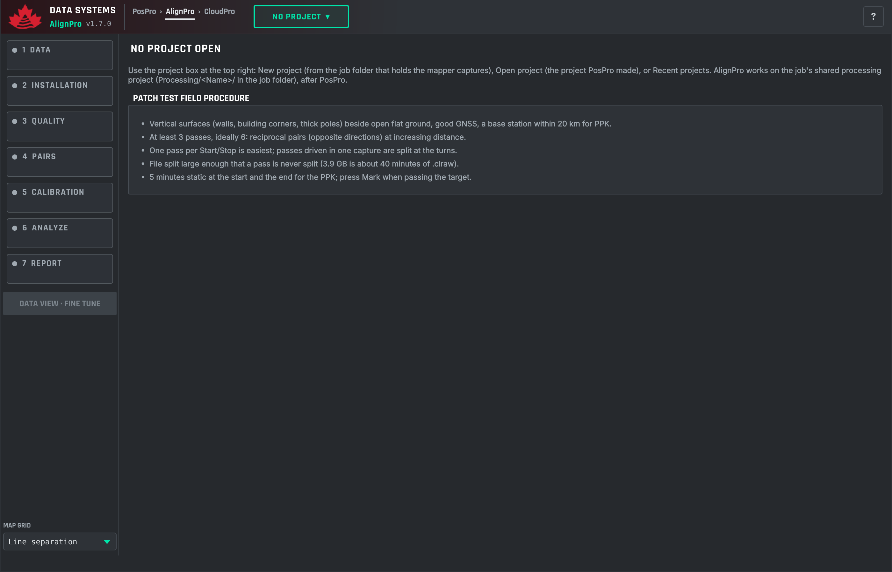
With no project open, AlignPro shows No project open: where projects come from (the project box) and the patch test field procedure (Chapter The calibration drive). AlignPro reopens the project you used last when it starts, so you usually see this page only the first time.
Each step is a pill with its number, its name and a second line that says what it holds. The colour gives its state:
| Step | Second line | Green when | Amber or red when |
|---|---|---|---|
| 1 Data | lines and total driving time | the files are read without warnings | amber: a data warning (Chapter Troubleshooting) |
| 2 Installation | the lever arm | a lever arm is set | amber: the lever arm is 0, 0, 0 |
| 3 Quality | worst PPS lock and lost packets | PPS lock 100 % and no lost packets | amber: PPS lock lost or packets lost |
| 4 Pairs | pairs and patches | at least 2 reciprocal pairs and 20 wall patches | amber: fewer, but at least 6 patches; red: fewer than 6 patches |
| 5 Calibration | the advised angles, or what to do next | calibrated, applied and finalized, no warnings | amber: a calibration warning, apply to finalize, or out of date: re-run |
| 6 Analyze | latency, lever, angles | optional; always grey | |
| 7 Report | the last report's file name | a report was written in this session | – |
Only 1 Data is available until the captures have been read; the other steps follow.
Reading, calibrating, applying, analysing and exporting run as QGIS background tasks. While one runs, the project box turns red, the status line at the bottom shows what is being done, a progress bar and a STOP button appear, and the pages cannot be changed. STOP cancels the job; a stopped or failed job keeps the earlier results. Starting a second job meanwhile gives Wait for the current job to finish (or stop it).
Short results appear in a bar above the status line. Warnings and errors also appear in the QGIS message bar, and every message goes to the log (Show the log in the project menu).
A good calibration depends more on the drive than on the software. Plan it with the crew; they record it like any other job.
.clraw).Process the job in PosPro first, then open the same project in AlignPro. AlignPro can start on the mapper's real-time trajectory or on another post-processed SBET file for a quick look, but the final calibration should use PosPro's trajectory.
The Data page shows which captures and which trajectory the calibration uses, what the files contain, and the passes (lines) AlignPro made of them.
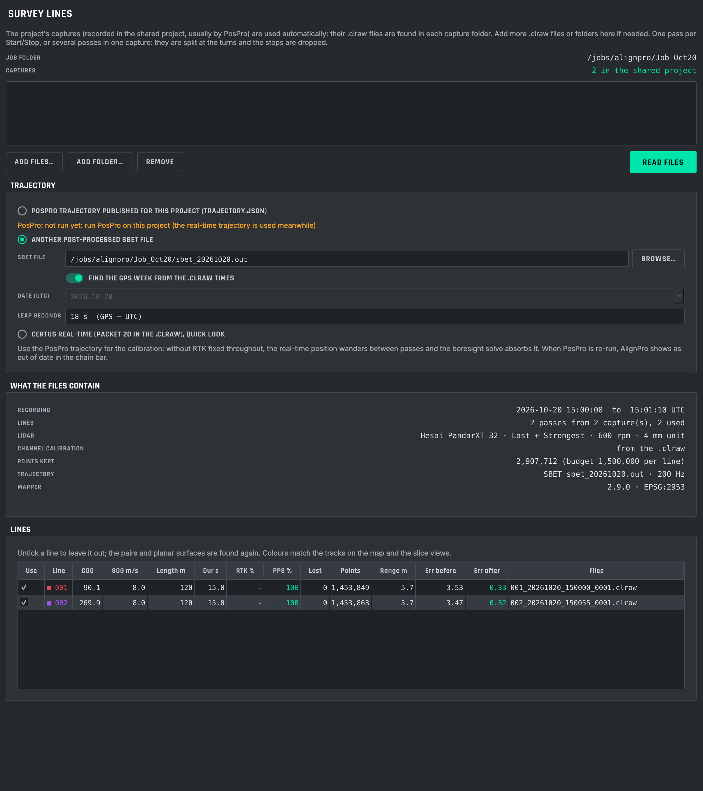
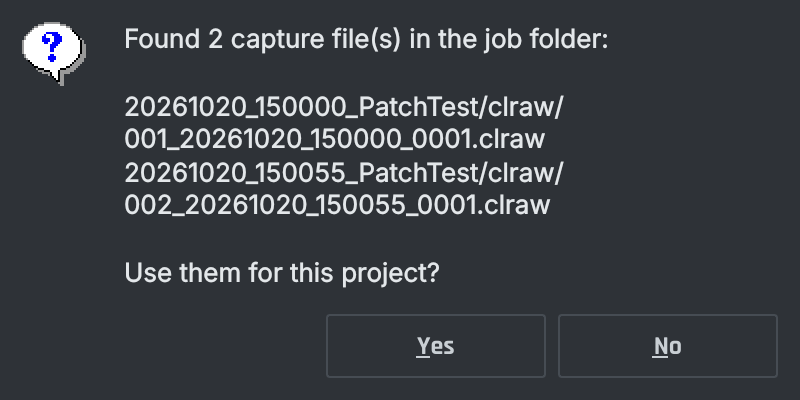
Job folder and Captures come from the shared project: AlignPro uses the captures recorded there (usually by PosPro) and finds the .clraw files in each capture folder. When the project has no captures recorded, AlignPro searches the job folder (the job folder is searched); when AlignPro is the first stage on the job, Read files records the files it uses as the project's captures. If raw files are missing, a red Missing line points to Relocate the job folder. Files inside the Processing folder are never read as raw data.
The list under it holds extra .clraw files or folders for this calibration only:
.clraw files; Add folder… adds a capture or export folder (its .clraw files are found inside); Remove takes the selected entries off the list.The first read decodes every capture and keeps a cache in 02_AlignPro/work/; later opens read the cache and are much faster. Packets recorded while the vehicle is slower than the minimum pass speed are skipped while reading (they would only repeat the same spot and use up the point budget). A capture with turns and stops is split into straight passes, named after the capture's line number with a letter (003a, 003b); a capture that is one straight pass keeps its number (001).
The trajectory gives the vehicle's position and attitude for every point. Choose one of three:
| Option | Use it |
|---|---|
| PosPro trajectory finalized for this project (trajectory.json) | For the final calibration. This is the choice for a new project. The line under it says PosPro's state: finalized and current (green), finalized, but out of date with the reasons, PosPro is processing now, the last PosPro run failed, or not run yet (amber). While PosPro has not finalized a trajectory, AlignPro uses the Certus real-time trajectory and says so in a warning. GPS week and leap seconds come from PosPro's file. |
| Post-processed SBET file(s) | One SBET for the whole drive, or one per capture (see below). Add… picks one or more files (*.out, *.sbet) and selects this option; Remove takes the selected ones out. A date in the first file's name such as sbet_20261020.out fills the date. Find the GPS week from the .clraw times (on by default) works out the GPS week from the capture times; turn it off to give the Date (UTC) yourself. Leap seconds is GPS − UTC (18 s since 2017). Without a file name this option falls back to the real-time trajectory. |
| Certus real-time (packet 20 in the .clraw), quick look | A first look in the field. Without RTK fixed throughout, the real-time position wanders between passes and the solved angles absorb it; AlignPro warns when it is RTK fixed less than 95 % of the time. |
One SBET per capture. With the older MapPro format the Certus was logged only during each capture, and every Start/Stop made a new project folder, so each capture has its own SBET. Add every capture folder to the project (Add folder… above) and every SBET to the list. AlignPro places each SBET by its GPS time and uses it for the captures it covers; the order of the list does not matter. Nothing is interpolated between two SBETs. Under What the files contain, each SBET is listed with the lines it covers, and a warning names any line that no SBET covers (that line is then left without points).
A calibration solved on anything other than PosPro's trajectory is marked on the Calibration page (Solved on the SBET file trajectory, not PosPro's…) and in alignment.json. When PosPro later finalizes, AlignPro turns stale in the workflow boxes.
| Row | Shows |
|---|---|
| Recording | First and last time of the lines (UTC) |
| Lines | Passes, the captures they come from, and how many are used |
| Lidar | Model, return mode, rotation speed and range unit |
| Channel calibration | from the .clraw, or missing: nominal angles used (amber) |
| Points kept | Points read in all lines and the budget per line (Settings, Points kept per line) |
| Trajectory | The trajectory in use and its rate |
| RTK fixed | The worst line's share of RTK fixed epochs, when the trajectory carries a fix type |
| Mapper | Mapper software version and coordinate system recorded in the capture |
Data warnings appear in amber under the rows (see Chapter Troubleshooting).
One row per pass. The line colour is the same on the map, in the Data View and on the other pages.
| Column | Meaning |
|---|---|
| Use | Untick to leave the line out. AlignPro saves the choice and finds the pairs and planar surfaces again; calibrate again afterwards. |
| Line | Name in its colour. A tooltip says when the trajectory does not cover the whole pass. |
| COG, SOG m/s | Course over ground (degrees) and speed |
| Length m, Dur s | Length and duration of the pass |
| RTK % | Share of RTK fixed epochs (green from 99 %, amber above 80 %, red below); - when the trajectory has no fix type, as with an SBET file |
| PPS % | Share of Lidar status packets with the PPS time lock (green at 100 %) |
| Lost | Lost Lidar packets (red when any) |
| Points, Range m | Points kept and their median range |
| Err before, Err after | The line's mean point-to-plane error (cm) before and after the last auto calibration |
| Files | The .clraw files of the line |
The Installation page holds the lever arm, mounting angles and latency the calibration starts from. They come from the hardware record in the first capture (shared in the project).
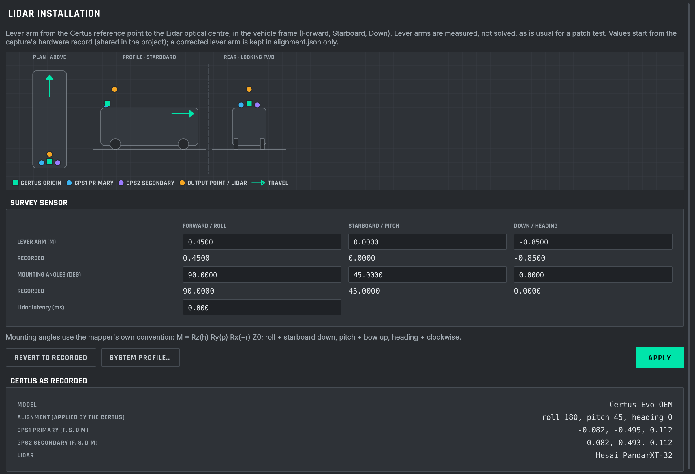
alignment.json for CloudPro.A system profile keeps what is true of the hardware rather than of one job – the Lidar lever arm, mounting angles and latency here, the antenna offsets, rear axle, IMU and vehicle in PosPro – so once you have checked them (a patch test here, Check antennas in PosPro) the next job from the same system starts with them. Profiles are kept on this computer and can be exported to a file and imported on another.
session.json) and the Certus serial number (from hardware.json).alignment.json only. To make it permanent, enter it in the mapper as well. If the lines were recorded with different mountings or lever arms, AlignPro warns and uses the first line's values for all.The Quality page checks the data before you trust a calibration. The mapper locks the Lidar clock to the GNSS (1PPS and GPRMC), so no latency should be needed: PPS lock should be 100 % and arrival minus sensor time about 1 ms.
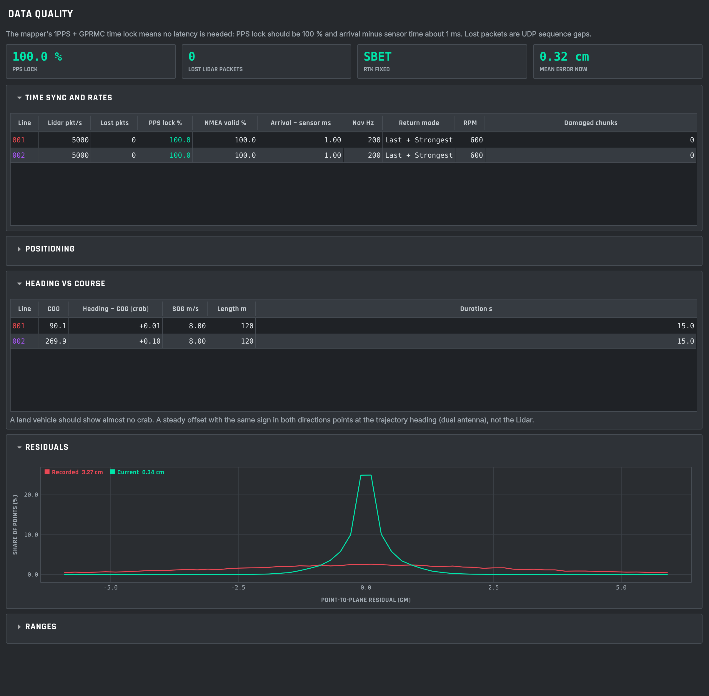
| Card | Shows |
|---|---|
| PPS lock | The worst line's PPS lock (green at 100 %, red below) |
| Lost Lidar packets | Lost packets in all lines (UDP sequence gaps) |
| RTK fixed | The worst line's RTK fixed share, or SBET when the trajectory has no fix type |
| Mean error now | The mean point-to-plane error with the current angles (green below 1 cm, amber below 2.5 cm) |
Click a section's title to open or close it.
| Section | What to look for |
|---|---|
| Time sync and rates | Per line: Lidar packets per second (amber below 4,900; about 5,000 is normal), lost packets, PPS lock %, NMEA valid %, arrival − sensor time (amber above 5 ms), navigation rate (amber below 50 Hz), return mode, RPM and damaged chunks skipped. A line with a lost PPS lock or lost packets is a reason to leave it out (Data page, Use). |
| Positioning | Position standard deviation (3D) over each pass, and the fix type when the trajectory has one. Without accuracies (no SMRMSG with the SBET) the plot says No position accuracies (SMRMSG missing). |
| Attitude accuracy | Roll, pitch and heading standard deviation over each pass; shown only when the trajectory carries them. Look for steady values without jumps. |
| Heading vs course | Per line: course, heading − course (crab), speed, length, duration. A land vehicle shows almost no crab; a steady offset with the same sign in both directions points at the trajectory heading, not the Lidar. |
| Residuals | The spread of point-to-plane residuals with the recorded angles (red) and the current ones (green), with their mean in the legend. After a good calibration the current curve is narrow and centred on 0. |
| Ranges | Points per range for each line, up to the range gate. Points should spread over the range gate, not all be close to the vehicle. |
The Pairs page shows which passes overlap and how many planar surfaces the calibration can use.
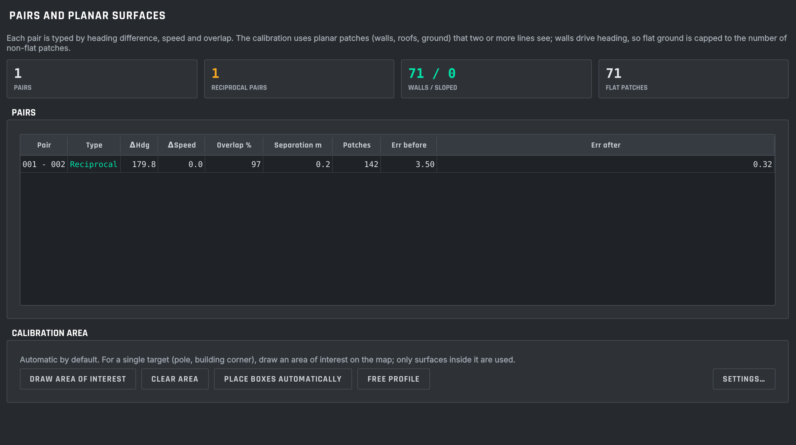
The cards give the number of Pairs, Reciprocal pairs (green from 2), Walls / sloped patches (green from 20 walls) and Flat patches. A patch is a small flat piece of a surface (a voxel of Patch size, 2 m by default) that two or more lines see and that is flat within Max thickness per line in each of them. Walls drive the heading, so flat ground is capped to the number of walls and sloped patches (Settings, Flat patches per non-flat patch).
Each pair of lines is typed by heading difference, speed and overlap:
| Type | Meaning (default limits) |
|---|---|
| Reciprocal | Opposite directions over the same ground (heading difference ≥ 150°): the strongest pair for roll and pitch |
| Same direction | Heading difference ≤ 30°, side by side |
| Crossing | Passes at an angle |
| Latency | Same direction, tracks less than 2 m apart, with clearly different speeds (≥ 2 m/s apart): shows a timing error |
| Additional | Too little overlap (below 20 %) or fewer than 3 shared patches |
The columns are the pair, its type, ΔHdg (degrees), ΔSpeed (m/s), Overlap %, Separation m (distance between the two tracks), the shared Patches, and the pair's error before and after the last auto calibration (cm).
A calibration error leaves a pattern in the finished points: between two passes driven in opposite directions the points of one pass sit a steady few centimetres from the other's, along the road or sideways, the other way round on the way back; a roll error makes the height difference grow with the distance from the drive line. CloudPro's Check line separation measures this on every line pair of the job, and this group shows what it found (it appears once CloudPro has checked):
| Column | What it is |
|---|---|
| Driven | both ways, same way or crossing. Only lines driven both ways (or crossing) show a calibration error; driven the same way it cancels. |
| Along, Sideways, Up | The steady offset of the second line against the first, in cm, in the first line's direction of travel. Driven both ways, each pass carries half of it: −8.0 along means each pass puts its points 4 cm ahead of (or behind) the vehicle. |
| Roll per 10 m | How much the height difference grows per 10 m from the drive lines. |
| Rest | What is left after the steady offset. A large rest is a trajectory error (PosPro), not the calibration. |
| Points at | Calibration, Trajectory (PosPro) or Either; the sentences under the table say why for the chosen pair. |
What the patterns mean: an offset along the road that reverses with the driving direction is a timing latency, an along-track lever arm or pitch; sideways, a cross-track lever arm or heading; a growing height difference, roll. Calibrate again on that material: Use these lines and their overlap keeps only the chosen pair's passes and sets an area of interest 25 m each side of the stretch they share, then the pairs and surfaces are found again. Auto calibrate and Apply as usual; CloudPro's points go out of date, and after it updates them its next check should show the steady offset gone. The note above the table turns amber when CloudPro measured points made with an earlier calibration (or none).
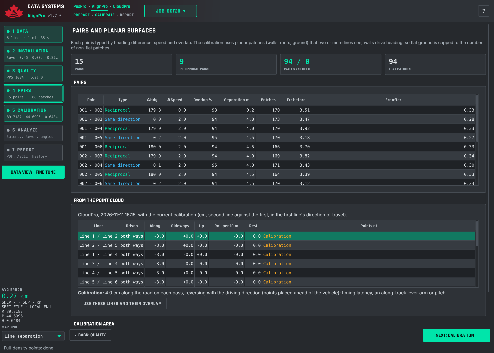
| Button | What it does |
|---|---|
| Draw area of interest | For a single target (a pole, a building corner). Click around the target on the QGIS map; right-click or double-click to finish (at least three points). Only patches inside the area are used, and the pairs and surfaces are found again. The area appears on the map as Area of interest. |
| Clear area | Back to the automatic choice over all the data. |
| Place boxes automatically | Puts the roll, pitch and heading inspection boxes on suitable surfaces again. The boxes are what the Data View shows under Roll box, Pitch box and Heading box, and the report's box pictures. |
| Free profile | Press on the QGIS map at the start of a profile, drag, and release at the end. A AlignPro – Profile window shows the points of every line along it. Corridor width sets how wide it is; Plan view shows it from above instead of from the side. |
| Settings… | The processing settings (below). |
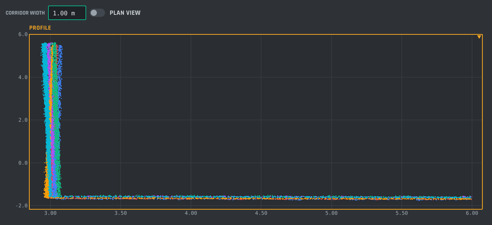
The point density chooser beside Auto calibrate sets how many points the calibration and the Data View use. More points define each plane better and give steadier angles, at the cost of time and memory. The note under it lists the numbers in force and an estimate of the memory needed, as a share of this PC's memory; it turns amber when the job would use more than about 40 % and AlignPro refuses a density that would need more than about 80 %.
| Density | Points kept per line | Points per line in each patch | Patches | Use |
|---|---|---|---|---|
| Standard | 1,500,000 | 80 | 4,000 | A quick look; what AlignPro used before 1.6.1. |
| Dense (default) | 3,000,000 | 250 | 8,000 | Calibration for delivery. |
| Very dense | 6,000,000 | 600 | 15,000 | Sparse scenes or long ranges; slow, needs a PC with plenty of memory. |
| Custom | The individual numbers in Settings… (tab Data and Patches). | Your own balance. | ||
Changing the points kept per line reads the lines again; the other numbers only rebuild the surfaces. Projects made before 1.6.1 keep their settings (Standard) until you choose another density.
The defaults suit the mapper; change them only for a reason. Restore defaults puts every value back. What happens on OK depends on what changed: data and pass settings read the lines again (and place the boxes again); the grid cell size only redraws the map grid; anything else finds the pairs and patches again.
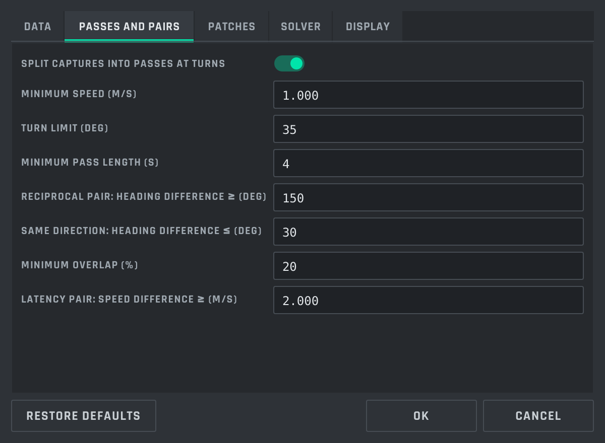
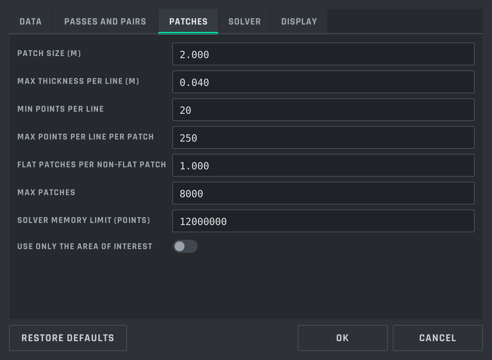
Figure {N}.4 The Settings dialog, tabs Passes and pairs, and Patches. All tabs and values are listed in Chapter Reference.
Auto calibrate solves roll, pitch and heading from every planar patch with all used lines, then again with each line left out when there are at least three. It starts from the current (applied) angles. It holds the AlignPro stage lock while it runs, so a second QGIS cannot work on AlignPro in the same project at the same time.
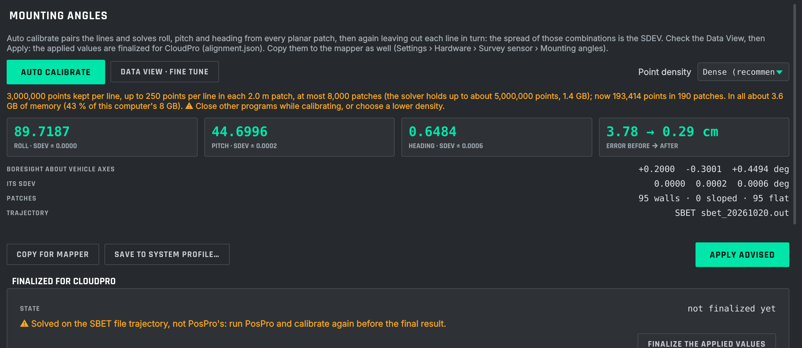
alignment.json for CloudPro.| Row | Shows |
|---|---|
| Boresight about vehicle axes | The correction from the starting angles, as small rotations about the vehicle's roll, pitch and heading axes. It stays readable near pitch 90°, where the mounting angles themselves can jump (Chapter Reference). |
| Its SDEV | The spread of that correction over the combinations |
| Patches | Walls, sloped and flat patches used |
| Trajectory | The trajectory the calibration was solved on |
Calibration warnings appear in amber under these rows (Chapter Troubleshooting).
Copy for mapper copies the line Roll 89.7187 Pitch 44.6997 Heading 0.6480 to the clipboard, to four decimals. It copies the applied angles, the ones finalized for CloudPro, so press it after Apply advised (or after applying your own values). To copy trial values you have not applied, use Copy for mapper in the Data View.
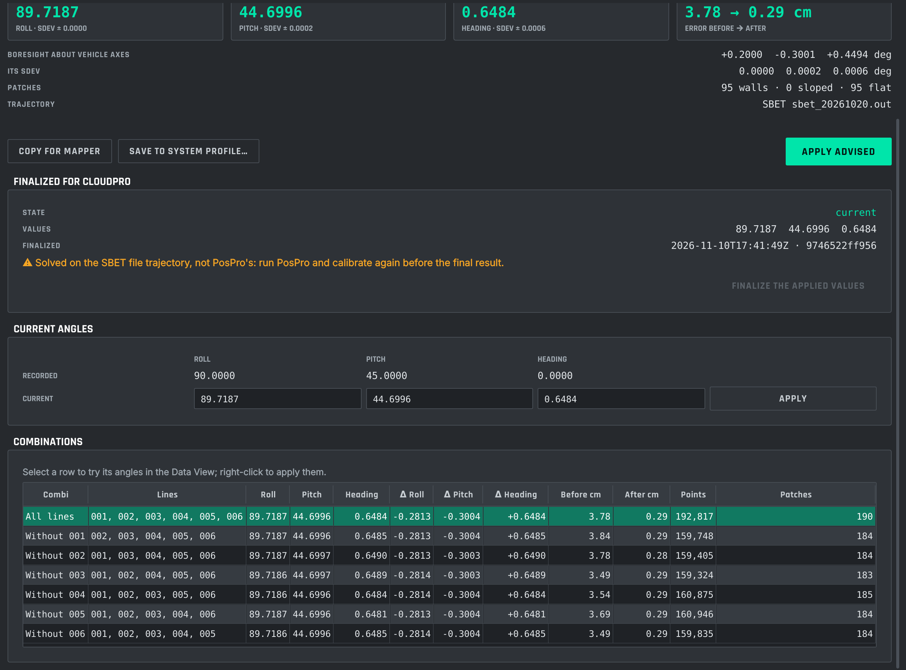
alignment.json again with the values applied now. It is available when nothing is finalized, the publication is out of date, or the applied values differ from it, for example after Reset AlignPro to the recorded values….Recorded shows the angles recorded in the capture; Current holds the applied ones. Type values and press Apply to apply and finalize your own.
One row per solve: All lines, then Without 001, Without 002 and so on when there are at least three used lines. Columns: the lines used, the solved roll, pitch and heading, their change from the starting angles (Δ), the mean error before and after (cm), and the points and patches used. A solve that did not converge says so in red.
A combination clearly apart from the others points at a line that disagrees: check that line's quality and its error in the Data page, and leave it out if it is bad.
The Data View shows the real points in four views, plan, roll box, pitch box and heading box, and draws them again a moment after every change of an angle, the lever arm or the latency. Use it to check the automatic result and to adjust by hand when needed. The points are georeferenced with the live (trial) values; a grey ghost shows the same points with other values underneath.
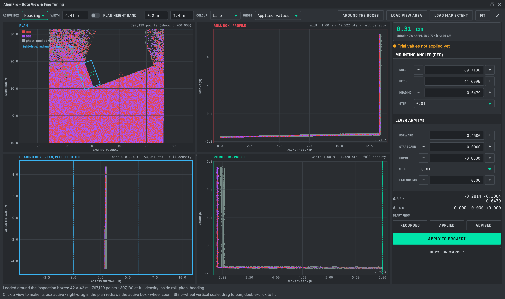
It is a standard DCS window: a window of its own (it does not dock), with a Window menu (top right of its toolbar) to maximise, reset or close it.
A view without its box says so and how to draw one. In every view: the wheel zooms, Shift + wheel (or Ctrl + wheel) stretches the height, drag pans, double-click fits. The note at the top right of each view gives the point count, the width and whether the points are at full density.
Active box. Click a view (or pick it in Active box) to make its box the active one; its view gets a thicker frame. Right-drag in the plan redraws the active box, from where you press to where you let go, across the feature (through the wall for roll and pitch, across the wall for heading). Width sets the active box's width; for the heading box it is the length of wall it covers. Boxes changed here are saved and shown on the map as well.
The Data View loads a square area around the roll, pitch and heading boxes, and loads again whenever a box is drawn or moved, on the map (Pairs page) or in the Data View. Drawing an area of interest moves it there. The loaded area is outlined on the QGIS map as Data View area, and the line under the views says what is loaded.
Inside the boxes (and 1.5 m around them) you see every point the Lidar recorded there, not the thinned set the calibration reads. AlignPro re-reads the raw .clraw for just the seconds each pass was at a box. The first time takes a few seconds per box; the views show the thinned points meanwhile and fill in when the job ends. After that the points come from the project's work/ folder. Outside the boxes the plan shows the thinned points, at most 700,000.
| Control | What it does |
|---|---|
| Active box | Roll, Pitch or Heading: the box that a right-drag in the plan redraws and Width sets |
| Width | The active box's width (0.1 to 200 m) |
| Plan height band and its two heights | Shows only the points in this band above the ground in the plan, so walls and poles stand out. The heading box view always uses the box's own band. |
| Colour | Line (the line colours), Height or Intensity |
| Ghost | Grey points under the live ones, with: None, Recorded angles (the angles and lever arm recorded in the capture, latency 0), Applied values (the default), Advised angles, or When view opened. Coloured points are the trial values; grey shows where the points were. |
| Around the boxes | Loads the area around the inspection boxes again (after one of the two below) |
| Load view area | Loads what the plan shows (a square of 10 to 300 m); boxes inside it at full density |
| Load map extent | Loads what the QGIS map shows (up to 300 m across); boxes inside it at full density |
| Fit | Fits all four views to their points |
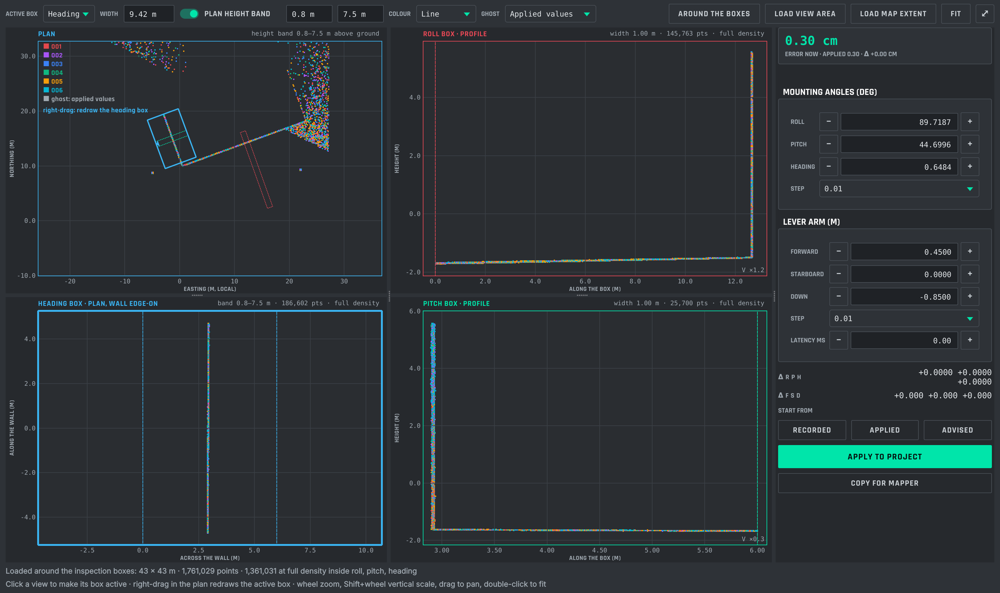
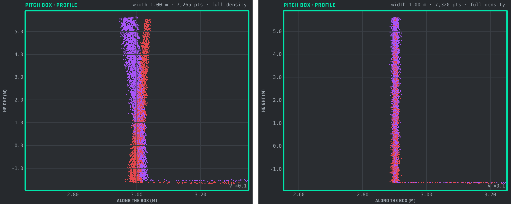
The panel on the right holds the trial values:
.clraw, latency 0), Applied (the values applied to the project) or Advised (the auto calibration result).alignment.json.Until you apply, the panel says ● Trial values not applied yet.
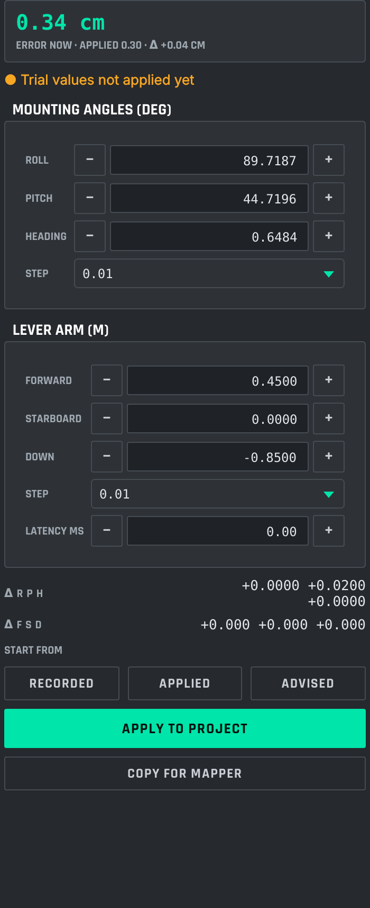
Analyze sweeps one value with everything else fixed and plots the mean point-to-plane error against it (the planar surfaces are fitted again at each step). The lowest point is the best value. Use it to check the latency or a lever arm component, or to confirm an angle.
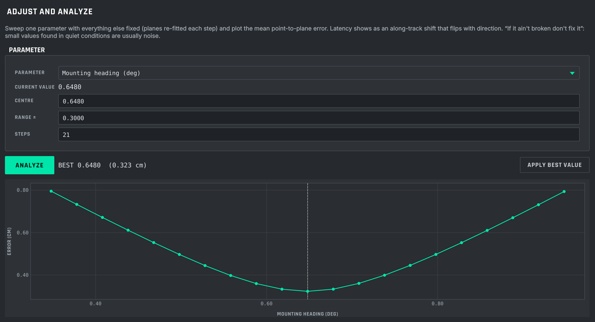
alignment.json.Latency shows as an along-track shift that flips with the driving direction, so it needs passes in both directions; a latency pair (Pairs page) helps. If the curve is jumpy, widen the range and add steps. Small values found on a quiet drive are usually noise: if it isn't broken, don't fix it.
The Report page writes the calibration report as PDF and text, keeps the history of earlier calibrations, and exports corrected points.
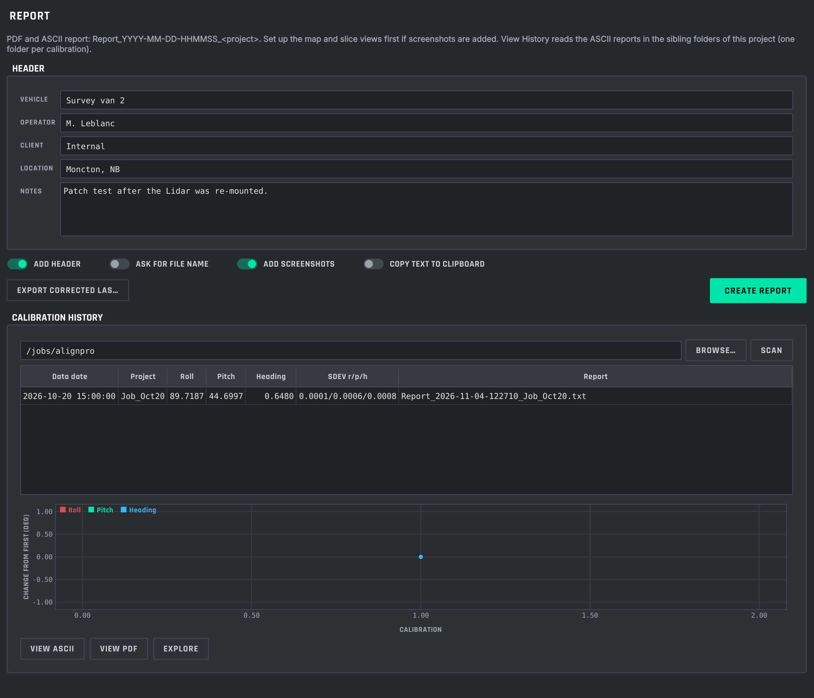
02_AlignPro/out/Report_YYYY-MM-DD-HHMMSS_<project>.pdf..txt beside it, then asks whether to open the PDF.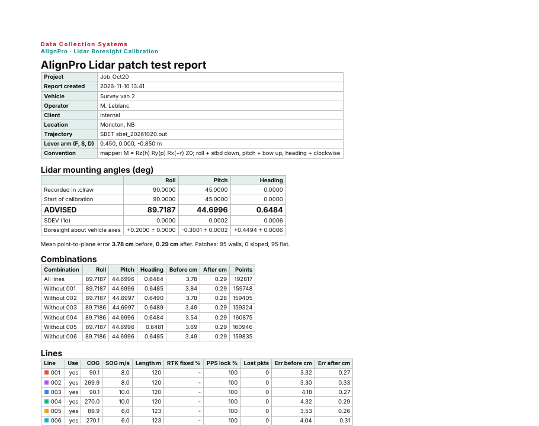
The report holds the project, trajectory, lever arm, latency and convention; the recorded, starting and advised angles with their SDEV and the boresight about the vehicle axes; the error before and after; the patches; every combination, line and pair; the warnings; the notes; and the files used. The text report ends with where to enter the advised angles in the mapper.
The history reads the text reports (Report_*.txt) found under the folder at the top, down to six folder levels, skipping work and log folders. It starts with the folder that holds this job's folder, so the reports of the other jobs beside it are listed too (each job's Processing/<Name>/02_AlignPro/out). Press Browse… to read another folder. Scan reads the folder again.
Export corrected LAS… writes the points of the used lines with the applied values to a LAS file (default 02_AlignPro/<Name>_corrected.las), to check them in other tools. Coordinates are in the coordinate system recorded in the capture (EPSG:2953 when none is recorded) with ellipsoidal heights; each point keeps its intensity, its line number as point source ID and its GPS time. These are the thinned points AlignPro works with; full point cloud products come from CloudPro.
CloudPro reads only what AlignPro finalizes; the mapper keeps its own settings, so copy the angles there too (Copy for mapper) and enter a corrected lever arm or latency by hand. Every apply finalizes: Apply advised, Apply on the Calibration or Installation page, a right-click Load these angles, Apply to project in the Data View, Apply best value on the Analyze page and Finalize the applied values. Each one writes, in 02_AlignPro/out/:
alignment.json: the file CloudPro reads (schema dcs.alignment/1);alignment_report.txt (the text report) and alignment_combinations.csv (one row per combination).Finalizing holds the AlignPro stage lock and writes a log in 02_AlignPro/log/. If it fails, the earlier publication stays. CloudPro turns stale when AlignPro finalizes again.
| Field | Content |
|---|---|
mount_deg | The applied roll, pitch and heading, their SDEV (sd), and source: calibration when they are the advised angles, otherwise manual adjustment |
mount_recorded_deg | The mounting the calibration started from, recorded in the capture, with its source |
lidar_lever_m | The lever arm used (value), its source (capture, measured when you changed it, or solved) and the recorded one |
latency_s | The Lidar latency applied, in seconds |
boresight_deg | The correction relative to the mounting recorded in the capture, about the vehicle axes, with its SDEV |
quality | The mean error now and with the recorded angles (cm), the SDEV, the lines used and their total, the patches, and the calibration warnings |
trajectory | Which trajectory the values were solved on (pospro, sbet or realtime), PosPro's publication identifier, and a description |
convention, built_from | The mounting convention (Chapter Reference), and what the result was made from, used to tell when it is out of date |
An excerpt of the file finalized in this guide's example:
"mount_deg": {"roll": 89.71865, "pitch": 44.69973, "heading": 0.64803,
"sd": {"roll": 0.00015, "pitch": 0.00061, "heading": 0.00079},
"source": "calibration"},
"mount_recorded_deg": {"roll": 90.0, "pitch": 45.0, "heading": 0.0, "source": "capture"},
"latency_s": 0.0,
"trajectory": {"source": "sbet", "handover_id": null, "description": "SBET sbet_20261020.out"}
AlignPro's box in the header turns ⚠ stale (reason on hover and on the Calibration page) when:
A stale result stays usable. To update it, run Auto calibrate again and apply.
AlignPro adds a layer group AlignPro – <project> to the QGIS project and zooms the map to the tracks when the data is read. The layers are drawn again whenever the lines, angles or boxes change. They use a local east-north frame centred on the job.
| Layer | Shows |
|---|---|
| Tracks | One line per pass in its line colour; a line left out is thin and dashed and marked (not used). Attributes: line, use, COG, SOG, points. |
| Line starts | A circle at the start of each pass, so you can tell the driving direction. |
| Calibration boxes | The roll (red), pitch (green) and heading (blue) inspection boxes, each with a filled arrow at its end. |
| Planar patches | The patches used: walls (blue squares), sloped (amber diamonds), flat (grey circles), with the number of lines and the height. Hidden when added; tick it in the Layers panel. |
| Grid – <value> | A grid of the lowest surface per cell (cell size in Settings, Display, 0.5 m by default), coloured by the value chosen in Map grid under the steps: Mean height, Standard deviation, Line separation, Count or Lines per cell. Line separation is the quickest map check of a calibration: where passes overlap it should be close to zero everywhere. |
| Grid – hillshade | A hillshade over the grid, with Mean height. |
| Area of interest | The area drawn on the Pairs page; dashed when it is not in use. |
The grid is a five-band GeoTIFF in 02_AlignPro/work/. Save the QGIS project in the project folder keeps the map with the job.
The plugin folder holds tools/alignpro_cli.py, which runs the same calibration without QGIS, for example on a processing server. It makes a stand-alone project (<NAME>.alignpro.json), not a shared DCS project, so it does not finalize alignment.json; it prints the results and writes the text report into PROJECT_DIR. It needs Python 3 with NumPy, and DCS Core beside the alignpro folder.
python3 alignpro_cli.py PROJECT_DIR NAME CLRAW_OR_FOLDER... [--sbet FILE [--date YYYY-MM-DD]]
[--apply] [--sweep PARAM CENTER HALF STEPS] [--set KEY VALUE]
| Argument | Meaning |
|---|---|
PROJECT_DIR NAME CLRAW_OR_FOLDER… | Where the project, cache and report go; the project name; the .clraw files or capture folders |
--sbet FILE, --date | A post-processed SBET as trajectory (otherwise the real-time one), and its date when the GPS week should not come from the captures |
--apply | Applies the advised angles to the project and prints the error with them |
--sweep | A sweep as on the Analyze page; PARAM is latency_ms, lever_f, lever_s, lever_d, roll, pitch or heading |
--set KEY VALUE | Overrides a setting, e.g. --set voxel_m 1.5 (keys in Chapter Reference); repeatable |
| You see | Why, and what to do |
|---|---|
| AlignPro needs the DCS Core plugin … | Install DCS Core, then restart QGIS. |
| No .clraw captures were found in … / No .clraw files found in the project | Check the job folder (relocate it if it moved), or add files on the Data page and press Read files. |
| Raw data not found when a project opens, or a red Missing line | Answer Yes and choose the job folder's new place, or use Raw data moved? Relocate the job folder…. |
| PosPro has not finalized a trajectory for this project yet: using the Certus real-time trajectory … | Run PosPro on the project, then read the data again in AlignPro and calibrate. Meanwhile choose an SBET file if you have one. |
| PosPro's trajectory is out of date … / Real-time trajectory is RTK fixed only …% | Re-run PosPro, then read and calibrate again in AlignPro. |
| The PosPro trajectory does not cover line … / SBET does not cover line …; check the SBET date and file. | Process that part in PosPro, or check the SBET date, the Find the GPS week option and the leap seconds. |
| The Lidar lever arm recorded in the capture is 0, 0, 0 … | Enter the measured lever arm on the Installation page (and in the mapper), then Apply. |
| Line …: Lidar PPS lock lost in … status packets. / … damaged chunk(s) skipped. | Look at that line on the Quality page; untick it on the Data page if it disagrees. |
| Line … was recorded with a different Lidar mounting or lever arm … | The first line's values are used for all. Check each capture's mapper settings. |
| Not enough planar surfaces seen by two or more lines (…) / The calibration did not converge … | The passes do not share enough surfaces. Check the overlap on the Pairs page and the range gate in Settings; clear or widen the area of interest. |
| Few vertical surfaces (…): heading is weakly determined. | Drive past more walls, also walls across the road. Check the heading in the Heading box. |
| Combination spread above 0.05 deg … | One line disagrees with the others. Compare the combinations, the line errors and the Quality page; leave a bad line out and calibrate again. |
| The mounting pitch is near 90 deg … | Expected for the upright mounting. Enter all three angles exactly; judge the result on the boresight about vehicle axes and its SDEV (Chapter Reference). |
| The solved heading is close to minus the entered heading … | The heading sign of the mounting convention has not been confirmed for this case. Check the result in the Heading box before applying. |
| Wait for the current job to finish (or stop it). | Let it end or press STOP. |
| AlignPro is being processed by … on … since … | Another QGIS holds the AlignPro stage lock of this project. Wait until it finishes. |
| PDF not written (…). The ASCII report is at … | Close the PDF if another program has it open; check the folder is writable. |
AlignPro uses the mapper's own conventions, so its numbers go into the mapper unchanged.
| Tab | Setting (key) | Default | Notes |
|---|---|---|---|
| Data | Return used (returns) | strongest | strongest, last or both. One return per firing avoids near-duplicate points. |
Range min (m) (range_min) | 1.5 | ||
Range max (m) (range_max) | 60 | Far points carry the most angle signal but also the most noise; 60 m suits the XT-32. | |
Intensity min (intensity_min) | 0 | ||
Points kept per line (points_per_line) | 3,000,000 | Random thinning budget; reads the lines again. | |
| Passes and pairs | Split captures into passes at turns (split_turns) | on | |
Minimum speed (m/s) (min_speed) | 1.0 | Slower periods (statics) are dropped. | |
Turn limit (deg) (turn_deg) | 35 | ||
Minimum pass length (s) (min_pass_s) | 4 | ||
Reciprocal pair: heading difference ≥ (deg) (reciprocal_deg) | 150 | ||
Same direction: heading difference ≤ (deg) (same_dir_deg) | 30 | ||
Minimum overlap (%) (min_overlap_pct) | 20 | ||
Latency pair: speed difference ≥ (m/s) (speed_margin) | 2.0 | ||
| Patches | Patch size (m) (voxel_m) | 2.0 | Voxel edge; 1.5–3 m for roadside scenes. |
Max thickness per line (m) (thickness_m) | 0.04 | A patch must be planar within this in every line that sees it. | |
Min points per line (min_pts_line) | 20 | ||
Max points per line per patch (max_pts_patch_line) | 250 | Set with the others by Point density. | |
Flat patches per non-flat patch (flat_ratio) | 1.0 | Caps ground so walls drive heading. | |
Max patches (max_patches) | 8000 | ||
Solver memory limit (points) (max_solve_points) | 12,000,000 | Above this many patch points the solver keeps a random subset. | |
Use only the area of interest (use_aoi) | off | Set by Draw area of interest and Clear area. | |
| Solver | Huber threshold (sigma) (huber_k) | 2.0 | Down-weights residuals beyond this. |
Reject after convergence (sigma, 0 = off) (reject_sigma) | 3.5 | ||
Max iterations (max_iter) | 12 | ||
Also solve the Lidar lever arm (weak; for diagnosis) (solve_lever) | off | ||
| Display | Grid cell size (m) (grid_cell_m) | 0.5 | Display only. |
Data and pass settings read the lines again; the grid cell size only redraws the grid; the others find the pairs and patches again. Settings are saved per project.
Path in Processing/<Name>/02_AlignPro/ | Holds |
|---|---|
alignpro.json | AlignPro's settings, applied values, boxes, area of interest, last calibration result, report header and log (a .bak copy beside it) |
work/ | Line caches, the map grid, report screenshots; can be deleted (rebuilt on the next read) |
out/ | alignment.json, alignment_report.txt, alignment_combinations.csv, the PDF and text reports |
log/ | One log per run, e.g. 20261104_095507_auto_calibration.log |